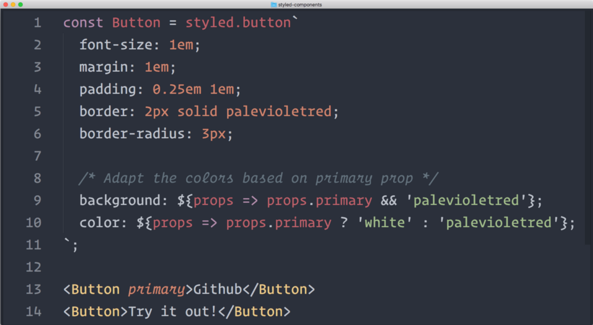

5分钟介绍styled-components

CSS是怪异的，你可以用15分钟学习它的基础知识，但是找到一个好的方式来组织你的样式会花费你数年的时间。
这部分源于语言本身的怪癖。跳出盒子外去看，CSS本身是相当受限的，没有变量、循环和函数。另一方面，它是相当纵容的，你可以给元素、class、ID或者是它们的任何组合添加样式。
混乱的样式表
正如你可能已经经历过的，这中纵容通常会带来混乱。尽管同时有预处理器，比如SASS和LESS，添加相当多有用的特性，它们仍然没能有效地阻止CSS的无组织状态。
结构组织上的工作被留给了像BEM这样的方法论。它们是有用的，但却完全是可选的，并且没办法在语言或者工具层面上强制使用。
CSS的新潮流
快进几年，一波基于Javascript的工具通过改变编程CSS的方式尝试从根本上解决这些问题。
Styled Components是其中之一，并且它以其mix of innovation and familiarity的特点快速吸引了很多关注。所以如果你使用React（如果你没有，查看我的Javascript学习计划和intro to React），那么绝对值得看一下这个新的CSS替代品。
最近我用它重新设计了我的个人网站，所以我非常想分享下在这个过程中我学到的一些东西。
带有样式的组件
关于Styled Components你需要首要理解的东西是它的名字应该字面上去理解。你不再给通过class或者html标签给html元素或者组件加样式：
|
|
取而代之，你通过定义styled components来处理它们自身包装的样式。然后它们就可以在后续的代码中自由使用：
|
|
看起来变化非常微小，并且事实上两段代码语法上是非常接近的。但关键的区别在于样式现在是组件的一部分。
换句话说，我们取缔了css class作为创建组件和它的样式的中间步骤。
正如styled-components共同创始人Max Stoiber所说：
“styled-components的基本思想是通过移除样式和组件的配对来强制使用最佳实践。”
降低复杂度
这一开始看起来是反直觉的，因为使用CSS的关键就在于通过引进中间的class层，将样式和内容解耦，而不是直接给html元素加样式（还记得<font>标签吗？）。
但是这层解耦也增加了许多复杂性，并且也有这样的争论：与使用CSS对比，一门“真正的”编程语言比如Javascript能更好地驾驭这些复杂性。
Props优先于Classes
为了保持这个无-class的哲学，styled-components在定制组件行为的时候优先使用props而不是class。所以不是：
|
|
而是这么写：
|
|
如你所见，通过剥离所有与CSS和html相关的实现细节，styled-components让你保持你的React组件的整洁。
也就是说，styled-components的CSS还是CSS代码。所以如下的代码还是有效的代码（尽管有些不符合习惯）：
|
|
这个特性使styled-components非常容易使用：一旦有疑问，你总是可以回退到你已经知道的东西上。
警告
值得一提的是styled-components现在还是一个年轻的项目，并且有一些特性还不完全支持。比如，你想在父组件上给子组件加样式，你暂时将不得不依赖于CSS的class（除非等到styled-components v2版本出来）。
现在也没有“官方的”的方式预先在服务端渲染CSS，尽管通过手动注入样式这是完全可行的。
并且styled-components会生成随机的class名字这一事实会导致你用浏览器的开发工具找出样式最初定位的位置变得困难。
但鼓舞人心的是，styled-components核心团队意识到这些问题，而且努力地一个接一个去修复它们。V2版本马上就要出来了，对此我非常期待。
学习更多
我这里的目标不是详细解释styled-components如何工作，而是给你一个鸟瞰让你自己决定是否值得一试。
如果我成功地引起你的兴趣，你可以通过以下地方学习更多关于styled-components的东西：
Max Stoiber最近在Smashing Magazine上发表了一篇关于styled-components缘由的文章。
styled-components项目本身拥有丰富的文档
Jamie Dixon的这篇文章概述了转到styled-components的一些好处
如果你想学习这个库是如何实现的，你可以看下Max的这篇文章
并且如果你想更进一步，你还可以看下Glamor，CSS新浪潮的另一个实现。